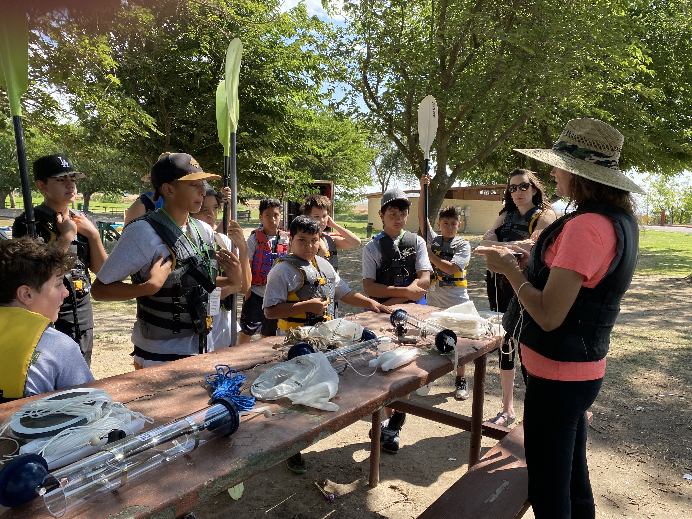

At the heart of our k-12 program are transformational educational tools. Educators and graduate students develop curricular materials for a STEAM pipeline from rural middle schools to STEAM teachers serving underrepresented groups. Exciting games support computational thinking and decision-making while the content retains students in agricultural fields and place-based learning.
The Climate Adaptation Science Academy Experiential Learning Expedition (CASA ELE) is a summer learning opportunity wherein graduate students receive training from academic experts and water leadership organizations. Each summer, we take affiliated graduate students on a headwaters-to-field trip in one of our case study states (California, Utah, and New Mexico).
Super Soaker Water Academy is a week-long program that teaches students all about water and how it is stored and used in California. By the end of the week, students have participated in water activities to teach them the relationship between water, agriculture, climate change, and how we can use technology to help our water systems. The program includes a kayaking field trip to Lake Yosemite.
Secure Water Future Water Hack Challenge was a weekend-long innovative space for students to explore data-driven solutions to water issues.